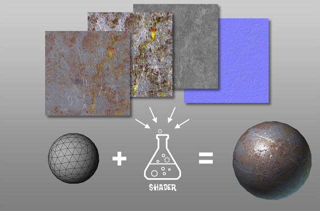
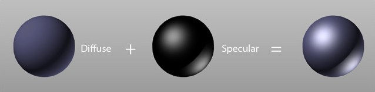
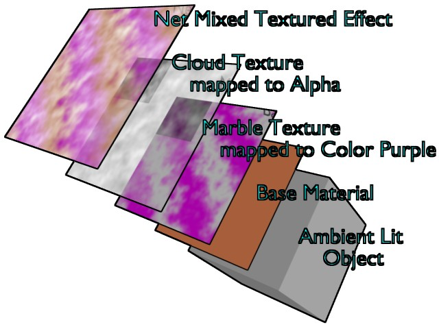
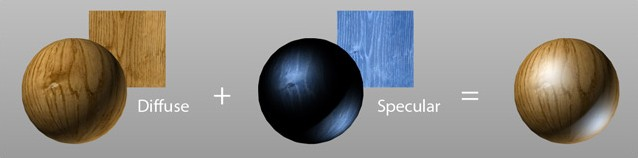
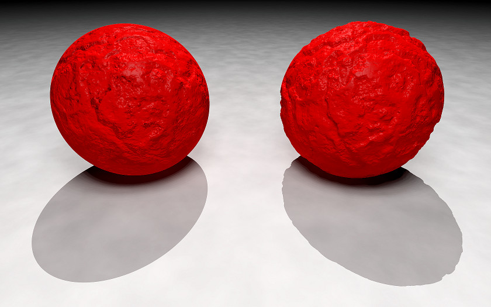
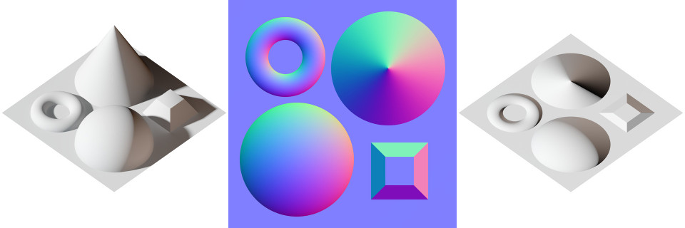
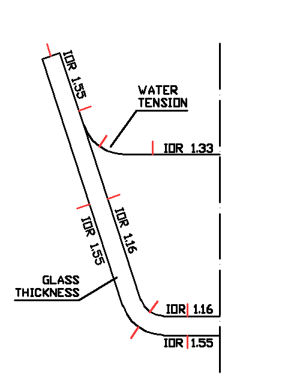

Introdução aos materiais no Blender
Definição
Se a modelação é o processo de definição da forma de um objeto através da manipulação da sua geometria, os materiais são a componente que define o aspeto desse mesmo objeto. Um plano pode assumir o aspeto de uma parede de cimento ou vidro e são os materiais que definem essa aparência.
Alguns termos e conceitos importantes
Texturing (texturização) é o processo de criação das superfícies (surfaces) e cores dos modelos para definir a sua aparência, o seu aspeto visual. Se a forma de um objeto resulta da sua geometria, material que define o seu aspeto resulta da utilização de shaders e texturas. Utilizamos texturas como inputs de shaders, definindo atributos como cor, reflexos, brilho, transparência, etc.
 Imagem de Pedro Toledo publicada em Brief Consideration About Materials.
 Imagem de Pedro Toledo publicada em Brief Consideration About Materials.
Texture mapping é um método inventado por Edwin Catmull na primeira metade da década de 70. É um processo de adicionar cor ou textura (imagem bitmap ou raster) a um modelo 3D através da projeção de imagens. Um texture map (mapa de textura) é aplicado (mapped, mapeado) à superfície de um modelo 3D. Estas projeções podem ser configuradas para afetar a cor e/ou especularidade (brilho gerado pela luz no material), reflexos, transparência, etc. As texturas necessitam de coordenadas (mapping coordinates) para determinar como irão ser aplicadas num objeto. O mapping especifica o modo como as texturas irão “embrulhar” o objeto.
 Imagem de Roger Wickes publicada na Blender Wiki.
Existem vários tipos de texture maps:
- Color (ou Diffuse) Maps: informação sobre a cor.
- Specular Map: Imagem que armazena informação sobre intensidade do brilho gerado pela luz no material (especularidade).
- Bump map: Imagem a preto-e-branco utilizada por um software 3D para simular pormenores tridimensionais na superfície de um objeto, afetam a superfície do objeto manipulando sombras e reflexos da luz. O efeito, a simulação de detalhes ou imperfeições na superfície, é só de renderização, não afeta a geometria do model (i.e. silhueta permanece igual).
- Displacement map: Similar ao Bump Map (imagem a preto-e-branco) mas afeta a geometria do objeto.
- Normal Map: mesma função do bump map mas tem mais informação, utiliza imagem rgb.
- E ainda existem Reflection Maps, Transparency Map, etc.
 Imagem de Pedro Toledo publicada em Brief Consideration About Materials.
 Imagem de GDallimore publicada na Wikipedia.
Imagem de GDallimore publicada na Wikipedia.
 Imagem de GDallimore publicada na Wikipedia.
 Imagem de Julian Herzog publicada na Wikipedia.
Shader é um conjunto de instruções associado a um modelo 3D que informa o motor de renderização sobre o modo como a superfície do modelo 3D deve interagir com a iluminação (opacidade, brilho, etc.), a forma como a luz é dispersa por uma superfície. Se o modelo 3D é a geometria, o shader define a natureza da superfície (metal, cerâmica, madeira, plástico, etc.) e o seu aspecto visual. O Blender disponibiliza um variado conjunto de shaders pré-definidos que podem ser configurados e combinados entre si. Frequentemente, os Shaders são construídos com árvores de nós, com cada nó a controlar um aspecto específico do processo.
 Imagem publicada na Wikipedia.
Imagem publicada na Wikipedia.
UV Mapping é um processo de texture mapping, uma forma de atribuir pixels de uma imagem 2D à superfície de um modelo 3D. As letras "U" e "V" representam os dois eixos da textura 2D e são utilizados porque o "X", "Y" e "Z" já estão a ser utilizados para os eixos do modelo 3D.
 Imagem de Tschmits publicada na Wikipedia.
Imagem de Tschmits publicada na Wikipedia.
Unwrapping (desembrulhar) é o processo de criar uma imagem 2D que represente o modelo 3D.
UV Layout é a imagem 2D que represente o modelo 3D.
Processo comum após o modelo 3D criado:
- Unwrapping criando o UV Layout;
- criar textura a partir do UV Layout (muitas vezes, utilizando um editor de imagem);
- importar e aplicar a textura no modelo 3D utilizando as coordenadas UV criadas.
IOR (Index Of Refraction / Índice de refração) é um conceito da ótica, é um valor que descreve a relação entre a velocidade da luz no vácuo e a velocidade com que a luz se propaga através de um determinado meio. Materiais diferentes têm IORs diferentes e isso significa uma interação diferente com a luz. Vidro e líquidos (materiais com transparência, que são atravessados pelos raios de luz) são materiais onde este valor assume especial importância pois configurar o IOR significa controlar o grau em que o ambiente visível através do material surge distorcido.
 Imagem retirada de YafaRay Materials Introduction.
Alguns materiais
| Material | IOR |
|---|---|
| Água | 1.333 |
| Vidro | 1.5 |
| Cerveja | 1.345 |
| Bronze | 1.180 |
| Cobre | 1.1 |
| Cristal | 2 |
| Diamante | 2.418 |
| Ouro | 0.470 |
| Gelo | 1.31 |
| Ferro | 2.950 |
| Marfim | 1.54 |
| Chumbo | 2.01 |
| Leite | 1.35 |
| Óleo (vegetal) | 1.470 |
| Plástico | 1.46 |
| Vodka | 1.363 |
Mais valores disponíveis nesta lista de IORs (Wikipedia).
Sugestões importantes
Não utilizar apenas uma cor difusa e sólida: No Cycles (e não só!), não utilize apenas uma cor difusa (diffuse) sólida. No mundo real, não existem materiais completamente difusos (diffuse). Quase todos os materiais refletem pelo menos alguma luz. Utilize sempre algum reflexo, mesmo que muito suave. É também comum haver alguma variação, mesmo na cor difusa. Misture duas cores difusas, podem ser muito aproximadas mas não exatamente os mesmos valores.
Não usar cores com valores máximos: No Cycles (e não só!), não utilize cores com Value (formato HSV) superior a 0.8. Não usar cores com Value (formato HSV) superior a 0.8 em shaders de tipo Diffuse, Glossy, Velvet e Anisotropic. Valores acima de 0.8 raramente existem no mundo real e aumenta a probabilidade de "fireflies" ("pirilampos", pixels brancos ou muito claros) nos renders.
Materiais condutores: materiais que conduzem eletricicidade (mais comuns os metais). Materiais condutores alteram cor especular (specular), tingindo-a. Utilize a mesma cor no Diffuse e Specular como ponto de partida (pode variar intensidade ou até a matiz, ligeiramente, mas mantenha matizes similares ou aproximadas). Ouro tem Diffuse e Specular com tons de amarelo, etc.
Materiais dielétricos (isolantes): não conduzem eletricidade (madeira, vidro, louça, plástico, borracha, tecidos, etc.). Estes materiais são neutros à luz e não afetam a cor do dos reflexos (Specular). Se a luz é branca, os reflexos (Specular) são brancos. Se a luz é amarela, os reflexos são amarelos, etc.
Material adicional recomendado
- Combining Shaders and Maps
- Texturing Tips
- How to create realistic metallic textures
- Color Theory
- The Power of Diffuse
- Surfacing 101 - Creating a UV Layout
- Surfacing 101 - Shader Networks & Surface Materials
- Surfacing 101 - Texture Mapping
- The Art of Digital Color
- Brief Consideration About Materials
- Understanding Colors